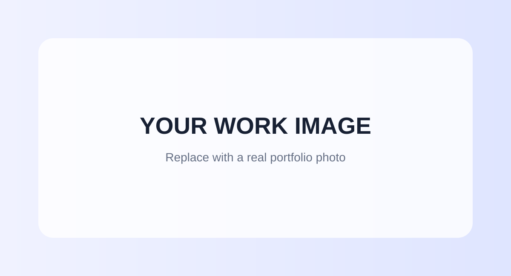

Build Digital Skills. Grow Your Career.
Career Development & Digital Growth Specialist with 11+ years of professional experience in employment support, project coordination, data quality, digital marketing, training and remote business support.
Career Development & Digital Growth Specialist
Employment • Inclusion • Project Coordination • Data Quality • Digital Marketing • Remote Support
Career Development & Digital Growth Professional
I work at the intersection of employment support, youth development, project coordination, data quality and digital growth.
I have more than 11 years of professional experience working in development programmes, employment support, training, project coordination, documentation, reporting, data management and stakeholder engagement.
My current work focuses on inclusion and employment, trainee support, employer engagement, placement linkage, career counselling and employment-related coordination.
Alongside my development-sector career, I am building practical capabilities in digital marketing, social media management, lead generation, web research, virtual assistance and online business support.
Practical Support for Remote Teams
Reliable support for data, administration, research, digital marketing and online business tasks.
Data Entry
Accurate data entry, spreadsheet management, record updating and data organization.
Virtual Assistant
Administrative assistance, task coordination, documentation and online support.
Web Research
Online research, information collection, verification and structured reporting.
Lead Generation
Prospect research, lead list building and business information collection.
Administrative Support
Documentation, Excel, Google Workspace, reporting and coordination support.
Digital Marketing
Social media, Meta Ads, Google Ads, content and lead generation support.
Social Media Support
Page management, content planning, audience engagement and reporting.
Customer & Client Support
Professional communication, follow-up, coordination and customer-facing support.
Google Workspace & MS Office
Documents, spreadsheets, presentations, email and cloud-based workflow support.
Professional, Practical & Result-Oriented
Professional Experience
More than a decade of experience across development, employment and digital work.
Reliable Coordination
Strong experience coordinating trainees, employers, teams and stakeholders.
Data-Focused
Comfortable with data collection, verification, documentation and reporting.
Remote Ready
Able to support distributed teams through online tools and structured workflows.
Digital Growth & Online Business
Practical experience in social media, advertising, content, lead generation and online learning.
Selaus Digital Solutions
Digital marketing and social media support initiative focused on helping local businesses improve their online presence.
Visit Project →Selaus Academy
Online-first practical learning initiative focused on digital skills, freelancing and career growth.
Visit Academy →Evidence of Impact, Leadership & Readiness for the Next Level
This section presents my professional contribution, responsibilities, measurable impact, stakeholder engagement, data and reporting capabilities, continuous learning and development priorities as part of my professional growth and promotion-readiness portfolio.
Programme & Employment
Supporting trainees and job seekers through employment services, career counselling, placement linkage, follow-up and inclusion-focused activities.
Stakeholder Leadership
Coordinating with employers, trainees, programme teams and external stakeholders to strengthen employment opportunities and programme implementation.
Data & Reporting
Maintaining employment-related information, verifying data, documenting activities and supporting accurate reporting and management decisions.
Continuous Improvement
Developing stronger capabilities in Excel, data analysis, dashboards, project management, MEAL and professional communication.
Career Experience & Contribution Snapshot
Key Responsibilities
- Employment and inclusion support for trainees and job seekers.
- Employer communication, engagement and placement linkage.
- Career counselling, interview preparation and follow-up.
- Project coordination, documentation and official reporting.
- Data collection, verification and employment tracking.
- Training, facilitation and stakeholder coordination.
- Supporting employer committees and employment-related initiatives.
- Maintaining professional communication with trainees, employers and programme stakeholders.
Next-Level Readiness
- Advanced Excel, data analysis and dashboard development.
- Power BI and management information systems.
- Project management, work planning and risk management.
- MEAL, data quality and evidence-based reporting.
- Leadership, team coordination and stakeholder management.
- Management-level reporting and professional presentations.
- Stronger digital tools and technology-enabled workflows.
- Building a documented evidence base for performance review and career progression.
Professional Growth Pathway
A structured career pathway based on increasing responsibility, leadership, technical capability and programme management exposure.
Evidence Log & Professional Growth Plan
This tracker can be updated monthly with verified achievements, outputs, outcomes and supporting evidence.
| Period | Focus Area | Planned / Completed Evidence | Status |
|---|---|---|---|
| October 2026 | Employment & Employer Engagement | Document employer communication, trainee placement follow-up, interviews, internship linkage and employment-related coordination. | In Progress |
| November 2026 | EDT / Training & Coordination | Record training coordination, participant support, attendance, documentation, stakeholder communication and outcomes. | Planned |
| December 2026 | Annual Review & Evidence Building | Consolidate achievements, employment outcomes, employer engagement, reports, learning activities and performance evidence. | Planned |
| Q1 2027 | Data & Management Skills | Strengthen Excel, dashboard, data analysis, reporting and management-information capabilities. | Development |
| 2027 | Leadership & Career Progression | Demonstrate increasing ownership, coordination, problem solving, stakeholder management and evidence-based decision support. | Long-Term |
📊 Quantitative Evidence
Monthly placement numbers, employer contacts, trainees supported, interviews coordinated, internships, training participants and follow-up data.
📁 Documentation Evidence
Reports, official notices, meeting records, employer communication, attendance records, dashboards, trackers and work plans.
🏆 Quality & Leadership Evidence
Examples of problem solving, process improvement, stakeholder coordination, initiative, mentoring, ownership and successful task completion.
From Task Execution to Greater Ownership
- Deliver assigned responsibilities accurately and on time.
- Take ownership of employment and stakeholder-related tasks.
- Maintain high-quality documentation and data.
- Identify operational challenges and propose practical solutions.
- Support team planning, monitoring and reporting.
- Strengthen employer and external stakeholder relationships.
- Demonstrate leadership through coordination and initiative.
- Build evidence of readiness for higher-level responsibility.
Professional Profile & Career Progression
This portfolio is designed as a living professional record. Verified achievements, outputs, outcomes, certificates, reports and supporting evidence can be added continuously throughout 2026–27.
Request Professional ProfileSelected Work & Projects
A collection of selected digital, training and professional work.

Digital Marketing Work
Social media marketing, digital advertising, lead generation and online business support.

Training & Facilitation
Training, facilitation, youth development and practical learning activities.

Selaus Academy
Digital skills, freelancing, practical learning and career development initiative.

Certificates & Training
Professional learning, skills development and continuous improvement.
Digital Marketing Portfolio
View the detailed Selaus Academy digital marketing portfolio and selected work.
View PDF Portfolio →Professional Journey
Officer – Inclusion & Employment
UCEP Bangladesh
Employment support, inclusion, trainee placement, employer engagement, career counselling, coordination, documentation and reporting.
Officer – Business Development
iDE Bangladesh
Business development, entrepreneur support, market linkage, field coordination and programme implementation.
Development Programme Roles
Caritas Bangladesh
Programme implementation, community engagement, documentation, training and coordination.
Development Programme Role
VSO Bangladesh
Programme and community development support.
Development Programme Role
LAMB
Programme support, community engagement, documentation and field-level coordination.
Professional Skills
Career & Employment
Project & Programme
Data & Administration
Digital Marketing
Remote Work
Development Areas
Academic & Professional Learning
Master of Social Science
National University
Carmichael College
Academic Background
Professional Training
Digital Marketing, Employment Development, Project Coordination and Professional Skills.
Work That Connects People With Opportunity
My professional work is focused on helping people develop skills, access employment opportunities and connect with relevant stakeholders.
Let's Work Together
I am open to professional opportunities involving employment support, project coordination, data quality, digital marketing, remote BPO, virtual assistance, research and administrative support.
Available for
- Remote BPO
- Virtual Assistant
- Data Entry
- Web Research
- Lead Generation
- Digital Marketing
- Administrative Support